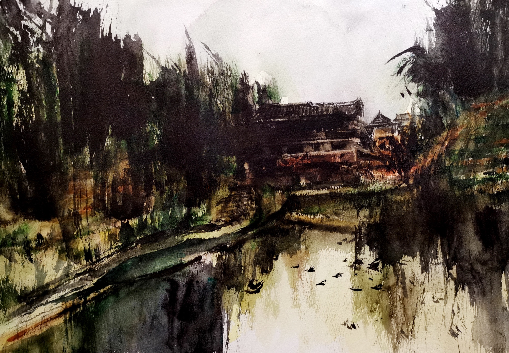

Spring Waters Grow Warm
春江水暖

- Artwork ID / 作品编号
- KW-W-000025
- Year / 年份
- 2024
- Medium / 媒介
- Watercolor on paper / 纸本水彩
- Dimensions / 尺寸
- 25 × 36 cm (H × W / 高 × 宽)
About the work / 作品介绍
Spring Waters Grow Warm was completed in 2024.Inspired by a traditional waterside village, the painting brings together misty trees, historic riverside architecture, and swimming ducks to create a peaceful scene filled with the vitality of spring. The flowing water connects nature and human life while reflecting both continuity and seasonal change.The old buildings preserve the memory of time, the spring water suggests the quiet renewal of life, and the ripples created by the ducks bring rhythm and movement to the composition. Through the transparency and fluidity of watercolor, the work expresses the enduring relationship between people and nature, allowing ordinary moments to reveal a quiet sense of warmth and life.
《春江水暖》完成于2024年。作品以江南水乡为题材，朦胧的树影、临水建筑与戏水的鸭群共同构成宁静而富有生机的春日景象。流动的水面连接着自然与人文，也映照着季节更替中的恒常与变化。古建承载岁月留下的记忆，春水舒展生命持续生长的力量，鸭群泛起的涟漪赋予画面轻盈而鲜活的节奏。我希望通过水彩透明而流动的语言，呈现人与自然彼此依存、相互滋养的关系，让平凡的日常散发出温暖而真实的生命气息。